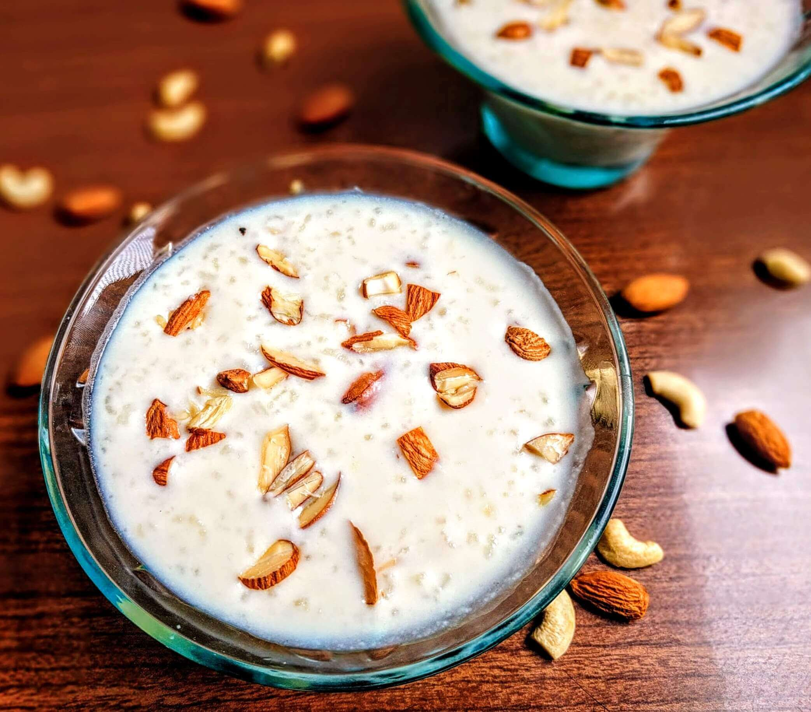

Kheer

Kheer is dessert that I can never say no to. The khoyaness in it just makes it otherwordly.
Ingredients
- 1 cup basmati rice
- 4 cups milk
- 1/2 cup sugar
- 1/4 teaspoon cardamom powder
- 1/4 cup condensed milk
- 1/4 cup chopped nuts (almonds and cashews)
- 1 tablespoon ghee
Cooking
- Rinse and soak rice for 30 minutes, then drain.
- Boil milk, add rice, and simmer until thickened (20-25 minutes).
- Stir in sugar and condensed milk; cook for 5-10 minutes.
- Add cardamom and nuts; mix well.
- Cool slightly and serve warm or chilled, garnished with additional nuts.